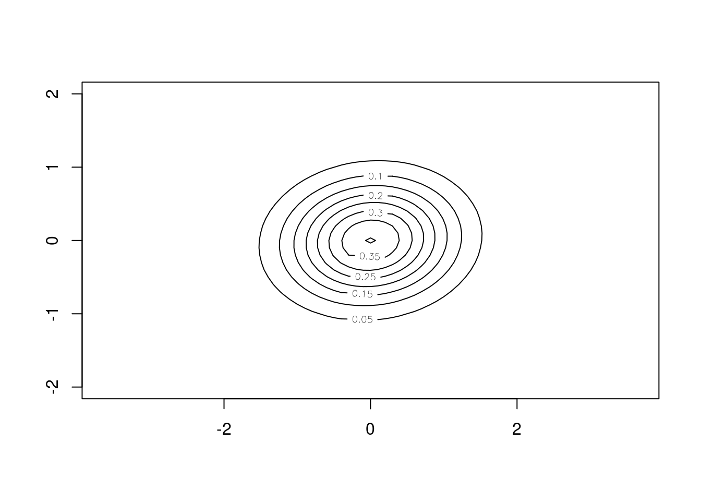

6 Spatiotemporal self-exciting models
For the spatiotemporal Hawkes processes fitted by stelfi, temporal self-excitement follows an exponential decay function (see Reinhart (2018)). The self-excitement over space follows a Gaussian distribution centered at the triggering event. The default is that the Gaussian function has a fixed covariance matrix, independent of time. Alternatively, covariance can be directly proportional to time, meaning that the self-excitement radiates out from the center over time. This can be appropriate when the mechanism causing self-excitement travels at a finite speed, but is very memory-intensive.
The intensity function used by stelfi is
\[\lambda(s,t) = \mu + \alpha \Sigma_{i:\tau_i<t}(\text{exp}(-\beta * (t-\tau_i)) G_i(s-x_i, t - \tau_i)).\]
Here \(\mu\) is the background rate, \(\beta\) is the rate of temporal decay, \(\alpha\) is the increase in intensity after an event, \(\tau_i\) are the event times, \(x_i\) are the event locations (in 2D Euclidean space) and \(G_i(s-x_i, t - \tau_i)\) is the spatial self-excitement kernel.
For the version with time-independent spatial excitement: \(G_i(s-x_i, t - \tau_i) = f_X(s - x_i)\) where \(f_X\) is the density function of \(X \sim \text{N}(0, \Sigma)\), (\(\Sigma = \begin{pmatrix} \sigma_x^2 & \rho \\ \rho & \sigma_y^2 \end{pmatrix}\)).
For the version with time-dependent spatial excitement: \(G_i(s-x_i, t - \tau_i) = f_X(s - x_i)\) where \(f_X\) is the density function of \(X \sim \text{N}(0, (t-\tau_i)\Sigma)\)
6.1 Fitting a spatiotemporal Hawkes process
data(xyt, package = "stelfi")
locs <- data.frame(x = xyt$x, y = xyt$y)
times <- xyt$t
domain <- sf::st_as_sf(xyt$window)ggplot(data = locs, aes(x = x, y = y, size = times)) +
geom_point() +
geom_sf(data = domain, fill = NA, inherit.aes = FALSE) +
theme_void()
bnd <- fmesher::fm_as_segm(as.matrix(sf::st_coordinates(domain)[, 1:2]))
smesh <- fmesher::fm_mesh_2d(boundary = bnd,
max.edge = 0.75, cutoff = 0.3)
param <- list(mu = 1, alpha = 3, beta = 6, xsigma = 0.2,
ysigma = 0.2, rho = 0)
fit <- fit_stelfi(times = times, locs = locs, sf = domain, smesh = smesh, parameters = param)
pars <- get_coefs(fit)Note that the coefs estimates are the vector of coefficients (on the log scale) of any supplied covariates, the first element related to the intercept (here the log of \(\mu\)). The estimate temporal self-excitement (ignoring and spatial influence) can be shown using show_hawkes() as in Chapter 2.
show_hawkes(list(times = times, params = c(mu = pars[1, 1], alpha = pars[3,1], beta = pars[4, 1])))
The bivariate Gaussian component of the diffusion kernel
## bivariate Gaussian kernel
sigma_x <- pars[5,1]
sigma_y <- pars[6,1]
rho <- pars[7,1]
x <- y <- seq(-2, 2, 0.1)
sigma <- matrix(c(sigma_x, rho, rho, sigma_y),
ncol = 2)
f <- function(x, y) mvtnorm::dmvnorm(cbind(x, y), c(0,0), sigma)
z <- outer(x,y,f)
contour(x, y, z, nlevels = 10, asp = 1)
6.2 Simulating from a spatiotemporal Hawkes process
param <- list(mu = 10, alpha = 30, beta = 60, xsigma = 1,
ysigma = 0.2, rho = 0)
sim <- fit$simulate(par = param)fit <- fit_stelfi(times = sim$times, locs = data.frame(x = sim$locs[,1], y = sim$locs[,2]),
sf = domain, smesh = smesh, parameters = param)
get_coefs(fit) Estimate Std. Error
mu 2.135436e+04 1.193421e+03
coefs 9.969011e+00 5.588652e-02
alpha 4.223688e+02 3.774970e+02
beta 1.931561e+03 4.203334e+03
xsigma 1.570652e+00 7.592043e-01
ysigma 4.314199e-02 2.364518e-02
rho 9.661767e-01 5.215814e-026.3 Including a GMRF
Sensitive to starting values. TODO
param <- list(mu = 1, alpha = 3, beta = 6, kappa = 0.9, tau = 1, xsigma = 0.2,
ysigma = 0.2, rho = 0)
fit <- fit_stelfi(times = times, locs = locs, sf = domain, smesh = smesh, parameters = param,
GMRF = TRUE)
pars <- get_coefs(fit)
pars Estimate Std. Error
mu 0.003432117 0.004005179
coefs -5.674577947 1.166970324
alpha 259.065220356 15.626889396
beta 259.065221549 15.626889258
xsigma 0.548451271 0.021614776
ysigma 0.296732653 0.014288624
rho 0.024276057 0.056616034
kappa 9.040797871 10.518462327
tau 0.004644464 0.009560527The estimated GMRF can be plotted using the show_field() function once the values have been extracted using get_fields() (Chapter 5).
get_fields(fit, smesh) |>
show_field(smesh = smesh, sf = domain, clip = TRUE) +
ggplot2::theme_classic()